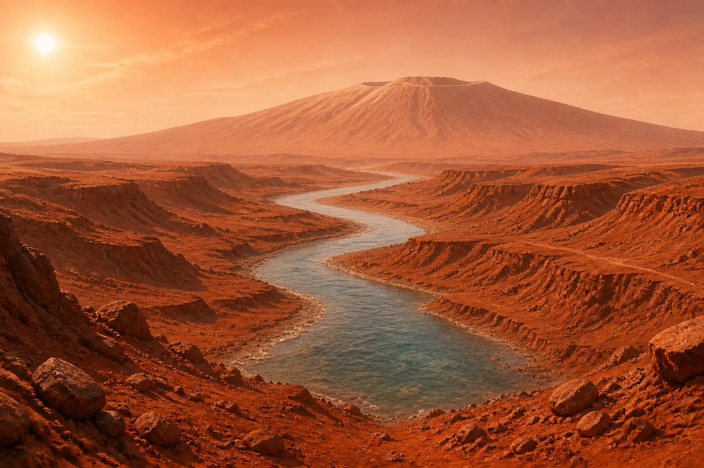
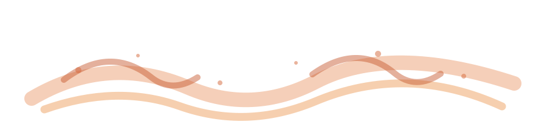
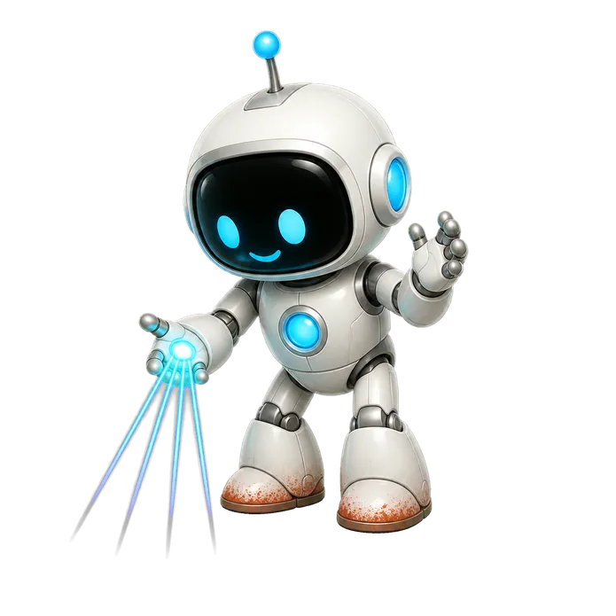
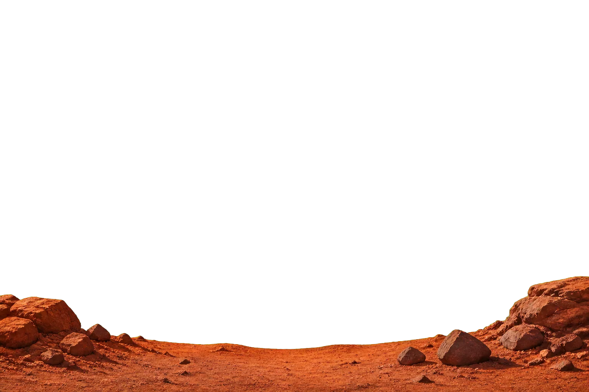

Page 8Mars: A World with a Watery Past
Mars is cold and dry today, but winding valleys and layered rocks show that liquid water flowed here long ago.
Mars is cold and dry today, but winding valleys and layered rocks show that liquid water flowed here long ago.





